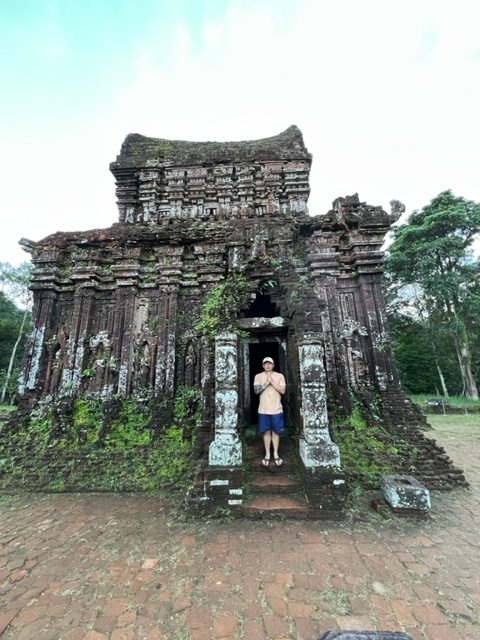

About me!
My name is Arthur, and I was born in the Philippines. When I was ten years old, my family and I moved to America. Growing up in a new country was challenging for me, as I had to navigate through different languages and cultures. However, I was lucky enough to have met some amazing friends who supported me and never made fun of my accent. Compared to my previous school in the Philippines, the American school system felt more relaxed and enjoyable. Overall, while my childhood had its difficulties, I am grateful for the opportunities I have had and the friends I have made along the way.
As a child growing up in the Philippines, one of the best things for me was watching movies and TV shows that I had only ever dreamed of seeing before. I particularly loved classic films from the 1980s, but my absolute favorites were the horror anthologies featuring iconic characters like Jason and Halloween. My love for horror flicks can be traced back to my childhood, when I would enjoy watching slasher movies with my uncles. Despite the fear, I always found it thrilling and exciting to watch. Back then, I never considered that these scary movies could actually happen in the real world where I grew up. When I think back on my childhood, one of my fondest memories is watching movies with my family while sharing a bucket of $5 ice cream. We always had plenty of it stocked up in the freezer - it was cheap, but oh so delicious. My favorite was Rocky Road, It's amazing how even something as simple as ice cream can become such a treasured memory.
I love to travel because it's an adventure filled with excitement and fear. It helps me to explore the world and understand its vastness. My military days introduced me to travel, which helped me to become more independent and value solitude. I've been fortunate enough to visit places like South Korea, Thailand, Vietnam, the Philippines, and Bali, and hope to explore South America and Eastern Europe next. Everyone should try traveling alone at least once, as it's a transformative experience that can enrich our lives in countless ways.
Job Experience
- Front Desk April/2018-August/2019
- Hospital Cook January/2016-December/2018
- Overseas Contractor K.B.R December/2009-November/2013
- US Army:Food Service June/2005-December/2009
Education
- Highschool Diploma
- Codefellows: Full Stack Web Development
The Top 10 Things You Didn't Know About Me
- Movie: Jason Classic Horror
- Movie: Holloween
- Places Been: Vietnam
- Places Been: Bali
- Places Been: Philippines
- Favorite Flavor of Ice: Rocky Road
- Veteran US Army
- Family: Married with children
- Cooking is my hobby
- I have no experience with programming